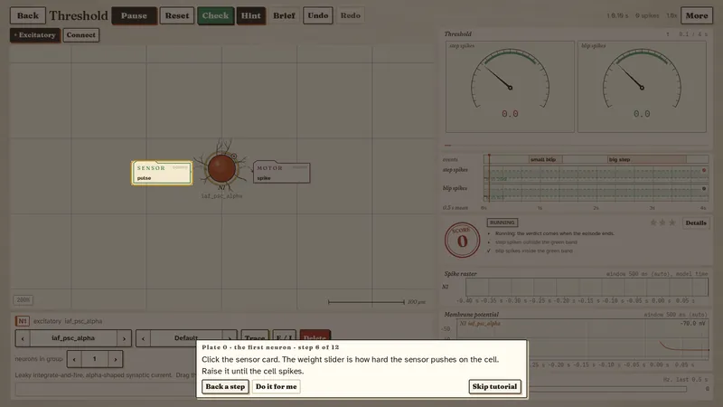

I. Build
An empty bench with the level's sensor and motor cards. Add cells from a parts bin of NEST and NESTML models (integrate-and-fire, adaptive exponential, Izhikevich, Hodgkin-Huxley, an SA-node pacemaker, a brainstem burster, a crab STG cell), drag connections, set weights. A short interactive tutorial walks the first neuron with you; the bench has undo and redo, zoom and pan, and draws a big population as one stained ellipse.